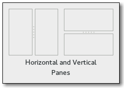

Gtk.Paned¶
Example¶

- Subclasses:
Methods¶
- Inherited:
Gtk.Container (35), Gtk.Widget (278), GObject.Object (37), Gtk.Buildable (10), Gtk.Orientable (2)
- Structs:
Gtk.ContainerClass (5), Gtk.WidgetClass (12), GObject.ObjectClass (5)
class |
|
|
|
|
|
|
|
|
|
|
|
|
|
|
|
|
|
|
Virtual Methods¶
|
|
|
|
|
|
Properties¶
- Inherited:
Name |
Type |
Flags |
Short Description |
|---|---|---|---|
r/en |
Largest possible value for the “position” property |
||
r/en |
Smallest possible value for the “position” property |
||
r/w/en |
Position of paned separator in pixels (0 means all the way to the left/top) |
||
r/w/en |
|
||
r/w/en |
Whether the paned should have a prominent handle |
Child Properties¶
Name |
Type |
Default |
Flags |
Short Description |
|---|---|---|---|---|
|
r/w |
If |
||
|
r/w |
If |
Style Properties¶
- Inherited:
Name |
Type |
Default |
Flags |
Short Description |
|---|---|---|---|---|
|
|
d/r |
Width of handle |
Signals¶
- Inherited:
Name |
Short Description |
|---|---|
The |
|
The |
|
The |
|
The |
|
The |
|
The |
Fields¶
- Inherited:
Name |
Type |
Access |
Description |
|---|---|---|---|
container |
r |
Class Details¶
- class Gtk.Paned(**kwargs)¶
- Bases:
- Abstract:
No
- Structure:
Gtk.Panedhas two panes, arranged either horizontally or vertically. The division between the two panes is adjustable by the user by dragging a handle.Child widgets are added to the panes of the widget with
Gtk.Paned.pack1() andGtk.Paned.pack2(). The division between the two children is set by default from the size requests of the children, but it can be adjusted by the user.A paned widget draws a separator between the two child widgets and a small handle that the user can drag to adjust the division. It does not draw any relief around the children or around the separator. (The space in which the separator is called the gutter.) Often, it is useful to put each child inside a
Gtk.Framewith the shadow type set toGtk.ShadowType.INso that the gutter appears as a ridge. No separator is drawn if one of the children is missing.Each child has two options that can be set, resize and shrink. If resize is true, then when the
Gtk.Panedis resized, that child will expand or shrink along with the paned widget. If shrink is true, then that child can be made smaller than its requisition by the user. Setting shrink toFalseallows the application to set a minimum size. If resize is false for both children, then this is treated as if resize is true for both children.The application can set the position of the slider as if it were set by the user, by calling
Gtk.Paned.set_position().- CSS nodes
paned ├── <child> ├── separator[.wide] ╰── <child>
Gtk.Panedhas a main CSS node with name paned, and a subnode for the separator with name separator. The subnode gets a .wide style class when the paned is supposed to be wide.In horizontal orientation, the nodes of the children are always arranged from left to right. So
:first-childwill always select the leftmost child, regardless of text direction.- Creating a paned widget with minimum sizes.
GtkWidget *hpaned = gtk_paned_new (GTK_ORIENTATION_HORIZONTAL); GtkWidget *frame1 = gtk_frame_new (NULL); GtkWidget *frame2 = gtk_frame_new (NULL); gtk_frame_set_shadow_type (GTK_FRAME (frame1), GTK_SHADOW_IN); gtk_frame_set_shadow_type (GTK_FRAME (frame2), GTK_SHADOW_IN); gtk_widget_set_size_request (hpaned, 200, -1); gtk_paned_pack1 (GTK_PANED (hpaned), frame1, TRUE, FALSE); gtk_widget_set_size_request (frame1, 50, -1); gtk_paned_pack2 (GTK_PANED (hpaned), frame2, FALSE, FALSE); gtk_widget_set_size_request (frame2, 50, -1);
- classmethod new(orientation)[source]¶
- Parameters:
orientation (
Gtk.Orientation) – the paned’s orientation.- Returns:
a new
Gtk.Paned.- Return type:
Creates a new
Gtk.Panedwidget.Added in version 3.0.
- add1(child)[source]¶
- Parameters:
child (
Gtk.Widget) – the child to add
Adds a child to the top or left pane with default parameters. This is equivalent to
gtk_paned_pack1 (paned, child, FALSE, TRUE).
- add2(child)[source]¶
- Parameters:
child (
Gtk.Widget) – the child to add
Adds a child to the bottom or right pane with default parameters. This is equivalent to
gtk_paned_pack2 (paned, child, TRUE, TRUE).
- get_child1()[source]¶
- Returns:
first child, or
Noneif it is not set.- Return type:
Gtk.WidgetorNone
Obtains the first child of the paned widget.
Added in version 2.4.
- get_child2()[source]¶
- Returns:
second child, or
Noneif it is not set.- Return type:
Gtk.WidgetorNone
Obtains the second child of the paned widget.
Added in version 2.4.
- get_handle_window()[source]¶
- Returns:
the paned’s handle window.
- Return type:
Returns the
Gdk.Windowof the handle. This function is useful when handling button or motion events because it enables the callback to distinguish between the window of the paned, a child and the handle.Added in version 2.20.
- get_position()[source]¶
- Returns:
position of the divider
- Return type:
Obtains the position of the divider between the two panes.
- get_wide_handle()[source]¶
-
Gets the
Gtk.Paned:wide-handleproperty.Added in version 3.16.
- pack1(child, resize, shrink)[source]¶
- Parameters:
child (
Gtk.Widget) – the child to addresize (
bool) – should this child expand when the paned widget is resized.shrink (
bool) – can this child be made smaller than its requisition.
Adds a child to the top or left pane.
- pack2(child, resize, shrink)[source]¶
- Parameters:
child (
Gtk.Widget) – the child to addresize (
bool) – should this child expand when the paned widget is resized.shrink (
bool) – can this child be made smaller than its requisition.
Adds a child to the bottom or right pane.
- set_position(position)[source]¶
- Parameters:
position (
int) – pixel position of divider, a negative value means that the position is unset.
Sets the position of the divider between the two panes.
- set_wide_handle(wide)[source]¶
- Parameters:
wide (
bool) – the new value for theGtk.Paned:wide-handleproperty
Sets the
Gtk.Paned:wide-handleproperty.Added in version 3.16.
- do_move_handle(scroll) virtual¶
- Parameters:
scroll (
Gtk.ScrollType)- Return type:
Signal Details¶
- Gtk.Paned.signals.accept_position(paned)¶
- Signal Name:
accept-position- Flags:
- Parameters:
paned (
Gtk.Paned) – The object which received the signal- Return type:
The
::accept-positionsignal is akeybinding signalwhich gets emitted to accept the current position of the handle when moving it using key bindings.The default binding for this signal is Return or Space.
Added in version 2.0.
- Gtk.Paned.signals.cancel_position(paned)¶
- Signal Name:
cancel-position- Flags:
- Parameters:
paned (
Gtk.Paned) – The object which received the signal- Return type:
The
::cancel-positionsignal is akeybinding signalwhich gets emitted to cancel moving the position of the handle using key bindings. The position of the handle will be reset to the value prior to moving it.The default binding for this signal is Escape.
Added in version 2.0.
- Gtk.Paned.signals.cycle_child_focus(paned, reversed)¶
- Signal Name:
cycle-child-focus- Flags:
- Parameters:
- Return type:
The
::cycle-child-focussignal is akeybinding signalwhich gets emitted to cycle the focus between the children of the paned.The default binding is f6.
Added in version 2.0.
- Gtk.Paned.signals.cycle_handle_focus(paned, reversed)¶
- Signal Name:
cycle-handle-focus- Flags:
- Parameters:
- Return type:
The
::cycle-handle-focussignal is akeybinding signalwhich gets emitted to cycle whether the paned should grab focus to allow the user to change position of the handle by using key bindings.The default binding for this signal is f8.
Added in version 2.0.
- Gtk.Paned.signals.move_handle(paned, scroll_type)¶
- Signal Name:
move-handle- Flags:
- Parameters:
paned (
Gtk.Paned) – The object which received the signalscroll_type (
Gtk.ScrollType) – aGtk.ScrollType
- Return type:
The
::move-handlesignal is akeybinding signalwhich gets emitted to move the handle when the user is using key bindings to move it.Added in version 2.0.
- Gtk.Paned.signals.toggle_handle_focus(paned)¶
- Signal Name:
toggle-handle-focus- Flags:
- Parameters:
paned (
Gtk.Paned) – The object which received the signal- Return type:
The
::toggle-handle-focusis akeybinding signalwhich gets emitted to accept the current position of the handle and then move focus to the next widget in the focus chain.The default binding is Tab.
Added in version 2.0.
Property Details¶
- Gtk.Paned.props.max_position¶
- Name:
max-position- Type:
- Default Value:
2147483647- Flags:
The largest possible value for the position property. This property is derived from the size and shrinkability of the widget’s children.
Added in version 2.4.
- Gtk.Paned.props.min_position¶
- Name:
min-position- Type:
- Default Value:
0- Flags:
The smallest possible value for the position property. This property is derived from the size and shrinkability of the widget’s children.
Added in version 2.4.
- Gtk.Paned.props.position¶
- Name:
position- Type:
- Default Value:
0- Flags:
Position of paned separator in pixels (0 means all the way to the left/top)
- Gtk.Paned.props.position_set¶
- Name:
position-set- Type:
- Default Value:
- Flags:
Trueif the Position property should be used